Ольхон
- 21-24 августа 2008 -
[ 1 ] - [ 2 ] - [ 3 ]
Часть 3. Озеро Шара-Нур, падь Ташкинэй и велотур через
Ольхон.
23 августа. Сегодня с утра никто никуда не торопился,
но все таки собрались и поехали на соленое озеро Шара-Нур. Олег и Олег
Олегович на Ниве, с ними Лёха, Соня и Толян, Света на Runx`e, с нею
Марина и я (и два вела в багажнике). После поселка Ялга дорога пошла
в лес и в гору, и Runx пришлось оставить. Я и Лёха поехали до озера
на велах, все остальные нас обогнали на Ниве. Дул холодный ветер и в
озере никто купаться не захотел. И вообще, это лето какое-то холодное,
да и турист в этом сезоне какой-то мелкий и косяками не ходит... Я вот
тоже давно бы уже не ходил, под елочку прилег бы и поспал, а то что-то
никак не отпустит после вчерашней ночи в нижней тундре :) ...
Так, о чем это я? А, вспомнил! Мы же от холодного ветра в сосновый лес
ушли, а там развели костер и поели арбуз, а потом все забатонили - кто-то
арбузные корки жарил, кто-то грибы курил, кто-то траву собирал. Потом
все резко подскочили и уехали на базу. А мы с Лёхой поехали на велосипедах
в падь Ташкинэй.
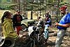
. 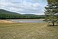
. 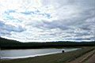
. 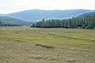
На соленом озере Шара-Нур
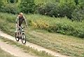
. 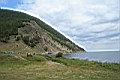
. 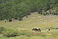
. 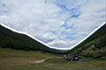
. 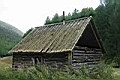
Падь Ташкинэй. Восточная сторона Ольхона более зелёная и кучерявая.
Прокатились на велах с ветерком. От озера еще небольшой
подъем был, а потом вниз, до самого Байкала. Спуск крутой, гонка адреналиновая
получилась, отлично мозги проветрила :) Немного отдохнули на берегу
большого Байкала. Берег, как берег. Такой мы уже много раз видели. Думал,
что обратно в гору запаримся подниматься, но на деле оказалось не очень-то
и напряжно. Еще и брусники поели, и с туристами поговорили. Нормальные
такие туристы, с большими рюкзаками пешком ходят. Оказывается, на острове
этот вид еще не перевелся :)
Доехали обратно до озера Шара-Нур, и тут я предложил Лёхе
ехать до базы не через Ялгу и не по пыльной трассе, как мы заезжали
на машинах, а разведать велосипедами новые дороги. Ну и Лёха был бы
не Лёха, если бы без вопросов не согласился на этот маленький авантюр.
Тем паче, что карты и навигатор были при нас :) Па-а-ехали!
Дороги везде более-менее накатанные, лесом-лесом, полем-полем. То в
гору пыхтишь, то с горы летишь. Через урочище Идиба выехали на трассу,
по трассе не поехали, а через урочище Семь Сосен поехали вдоль берега
Малого Моря, мимо залива Тодакский, мыса Шара-Шулун, полуострова Хоргой,
и где-то там выехали на дорогу до базы. Отлично прокатились!!!
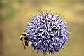
. 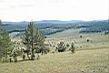
. 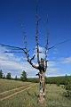
. 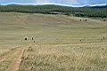
. 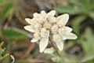
Урочище Идиба
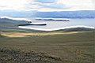
Семь Сосен, мыс Шара-Шулун, остров Огой
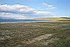
. 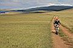
Где-то в районе Семь Сосен
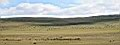
Отара овец
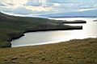
. 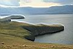
Залив Хоргойская Губа и мыс Хубын
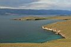
Мыс Хоргой. На нем видно курыканскую стенку.
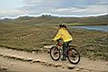
. 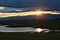
. 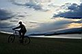
. 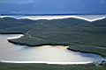
Вечером поехали на Трехглавую, смотреть закат. Я, Марина и Артем.
Трехглавая - это гора, которая со стороны еще похожа на старинную крепость,
или на зАмок на вершине холма. С этой горы хорошо видно залив Хул
и еще видно базу.
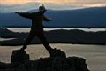
.
. 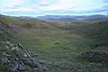
. 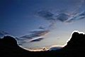
. 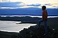
А еще на этой горе, возле крепости, есть кратер какой-то, или даже старинный
амфитеатр,
или тут кого-то в жертву жертвовали, или даже инопланетяне тут зависали.
Короче, это Место Силы ! Там даже в середине пятачек зеленой травы был,
и мы на нем втроем валялись и смотрели Небо. Было очень хорошо...
Сегодня уехали Света и Олеги, но зато приехала Ксюша Шу
(А-а-а-а-а! :), Лёня и Настя, и еще Нина. Нина с трассы до базы добиралась-добиралась,
и чуть не заблудилась с двумя тортами среди сусликов :) Про тех, кто
приехал или уехал - это я про тех, кого сам знаю, а вообще на базе постоянно
кто-то приезжает и уезжает, а кто-то постоянно тут живет. Маринка тут
много знакомых встретила, про кого и не подумала бы тут встретить...
На базе эдакое броуновское движение происходит, и со стороны кажется,
что никакого порядка нет, особенно, если на Ивана Шульца посмотреть,
на хозяина базы. Но это только со стороны! На самом деле, я догадался,
что порядок есть! Только он посторонним неведом и непонятен. Это надо
тут жить долго и внимательно, чтобы во все врубиться. Так что мы с Маринкой
не торопились уезжать. Ведь даже проспав одну лишнюю ночь под звуки
веселой гулянки можно немного что-то понять...
24 августа. Сегодня вечером на базе будут отмечать закрытие
сезона. А мы сегодня возвращаемся в город. После обеда пошли-поехали.
Лёха нас провожал. Нина с трассы уехала стопом, а мы с Мариной на велосипедах.
Ну и немного не успели на паром, Нина нам с него помахала ручкой :)
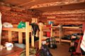
. 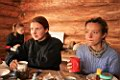
.
. 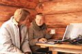
. 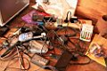
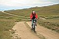
. 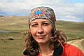
. 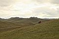
Зато пока мы ждали следующий, немного познакомились с
парнем, который спрашивал, где мы катались на велах и как поедем дальше.
Мы рассказали, где катались, и еще сказали, что до Иркутска можем уехать
на его машине. Он сказал, что мы не влезем и ушел. А мы еще потом искали
на пароме транспорт до города. И после переправы я поехал искать маршрутку,
а этот парень подъезжает со своей девушкой, и говорит Маринке: "Ну
давай попробуем загрузиться". Ну и попробовали... В итоге, в Форестер
с уже почти полным багажником, запихали свои два вела, рюкзаки и сами
втиснулись :) Ребята тоже первый раз на Ольхоне отдыхали. Мы с ними
еще по дороге поели в кафе "Позы тут", и вообще, какие-то
они такие, как будто давно их знаешь. Свои какие-то :) И даже от денег
за проезд и за неудобства отказались. Вот на таких вот людях и держится
во мне вера в Хороших Людей.
Лёха Слюдянский.
Фото: Август 2008.
Текст: Сентябрь 2008.
Тема про Малое Море в разделе "Бродяги"
:
Безвременье (2006)
ТуТаЙ (2007)